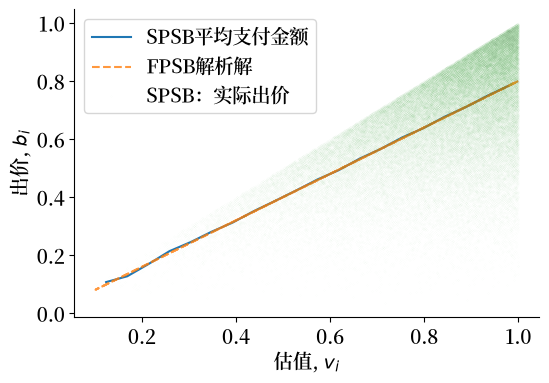
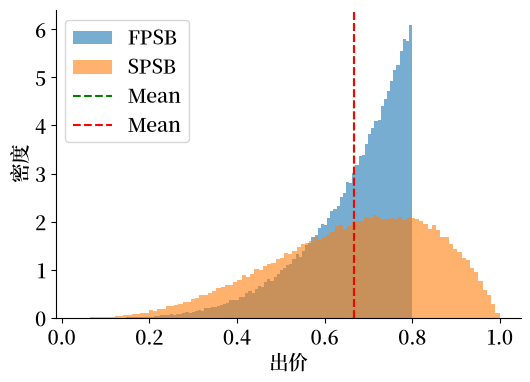
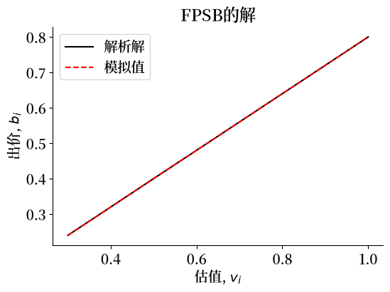
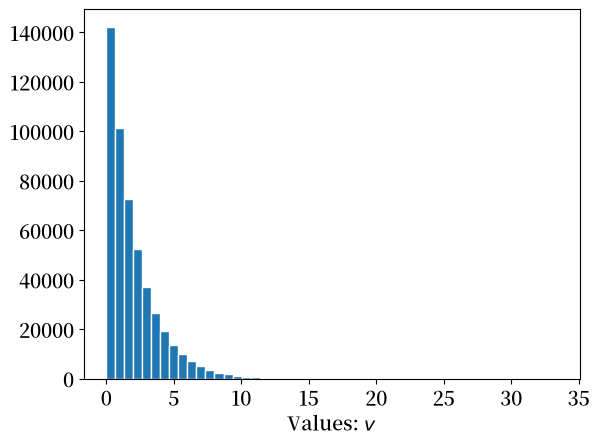
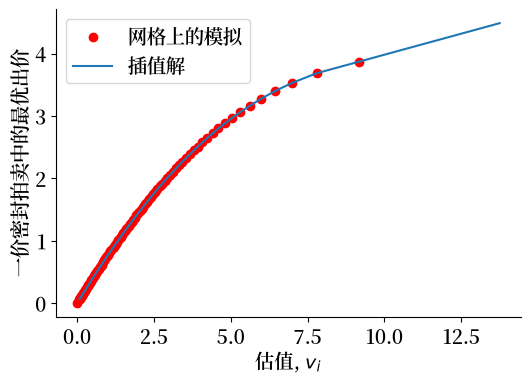
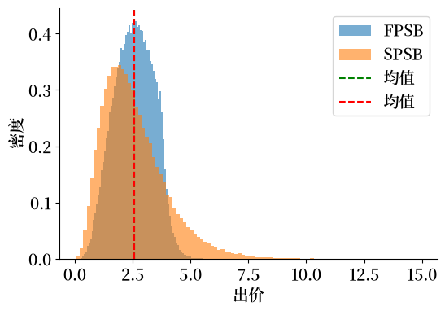
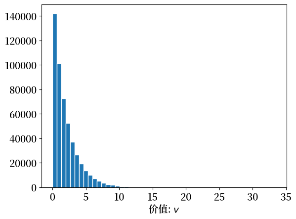
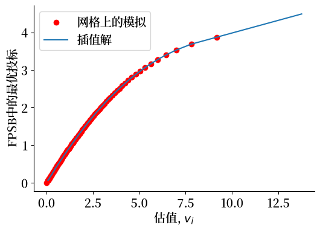
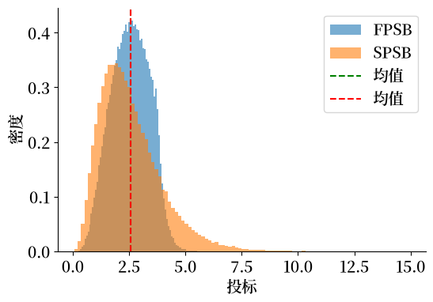

138. 一价和二价拍卖#
本讲座旨在为后续关于多商品分配机制的讲座做铺垫。
在那个讲座中，规划者或拍卖人同时将多个商品分配给一组人。
在本讲座中，我们将讨论如何将单个商品分配给一组人中的一个人。
我们将学习并模拟两种经典的拍卖方式：
第一价格密封投标拍卖(FPSB)
由William Vickrey创建的第二价格密封投标拍卖(SPSB) [Vickrey, 1961]
我们还将学习并应用：
收益等价定理
我们建议观看Anders Munk-Nielsen关于第二价格拍卖的视频：
以及
Anders Munk-Nielsen 将他的代码放在了GitHub上。
我们下面的大部分Python代码都基于他的代码。
138.1. 第一价格密封拍卖(FPSB)#
规则：
拍卖一件商品。
潜在买家同时提交密封投标。
每个投标者只知道自己的投标。
商品分配给出价最高的人。
中标者支付其投标价格。
详细设定：
有\(n>2\)个潜在买家，编号为\(i = 1, 2, \ldots, n\)。
买家\(i\)对被拍卖商品的估值为\(v_i\)。
买家\(i\)想要最大化她的预期剩余价值，定义为\(v_i - p\)，其中\(p\)是她在赢得拍卖的情况下需要支付的价格。
显然，
如果\(i\)的出价恰好是\(v_i\)，她支付的正是她认为物品值得的价格，不会获得任何剩余价值。
买家\(i\)永远不会想要出价高于\(v_i\)。
如果买家 \(i\) 出价 \(b < v_i\) 并赢得拍卖，她获得的剩余价值为 \(v_i - b > 0\)。
如果买家 \(i\) 出价 \(b < v_i\) 而其他人出价高于 \(b\)，买家 \(i\) 就会输掉拍卖且没有剩余价值。
要继续进行，买家 \(i\) 需要知道她的出价 \(v_i\) 作为函数时赢得拍卖的概率
这要求她知道其他潜在买家 \(j \neq i\) 的出价 \(v_j\) 的概率分布
根据她对该概率分布的认知，买家 \(i\) 希望设定一个能最大化其剩余价值数学期望的出价。
出价是密封的，所以任何竞标者都不知道其他潜在买家提交的出价。
这意味着竞标者实际上参与的是一个玩家不知道其他玩家收益的博弈。
这是一个贝叶斯博弈，其纳什均衡被称为贝叶斯纳什均衡。
为了完整描述这种情况，我们假设潜在买家的估值是独立且同分布的，其概率分布为所有投标者所知。
投标者会选择低于\(v_i\)的最优投标价格。
138.1.1. 一价密封拍卖的特征#
一价密封拍卖具有唯一的对称贝叶斯纳什均衡。
买家\(i\)的最优投标是
其中\(v_{i}\)是投标者\(i\)的估值，\(y_{i}\)是所有其他投标者的最高估值：
关于这个论断的证明可以在维基百科的Vickrey拍卖页面找到
138.2. 二价密封拍卖(SPSB)#
**规则：**在二价密封拍卖(SPSB)中，赢家支付第二高的投标价格。
138.3. 二价密封拍卖的特征#
在SPSB拍卖中，竞标者最优选择是按其真实价值出价。
形式上，在单一不可分物品的SPSB拍卖中，占优策略组合是每个竞标者按其价值出价。
关于Vickrey拍卖的证明可在维基百科页面找到
138.4. 私人价值的均匀分布#
我们假设竞标者\(i\)的估值\(v_{i}\)服从分布\(v_{i} \stackrel{\text{i.i.d.}}{\sim} U(0,1)\)。
在这个假设下，我们可以分析计算FPSB和SPSB中出价的概率分布。
我们将模拟结果，并通过大数定律验证模拟结果与分析结果一致。
我们可以用我们的模拟来说明收益等价定理，该定理断言平均而言，一价和二价密封拍卖为卖家提供相同的收益。
要了解收入等价定理，请参阅此维基百科页面
138.5. 设置#
有 \(n\) 个投标人。
每个投标人都知道有 \(n-1\) 个其他投标人。
138.6. 第一价格密封投标拍卖#
投标人 \(i\) 在第一价格密封投标拍卖中的最优投标由方程 (138.1) 和 (138.2) 描述。
当投标是从均匀分布中独立同分布抽取时，\(y_{i}\) 的累积分布函数为
且 \(y_i\) 的概率密度函数为 \(\tilde{f}_{n-1}(y) = (n-1)y^{n-2}\)。
那么投标人 \(i\) 在第一价格密封投标拍卖中的最优投标为：
138.7. 第二价格密封拍卖#
在第二价格密封拍卖中，对竞价者\(i\)来说，出价\(v_i\)是最优选择。
138.8. Python代码#
import numpy as np
import matplotlib.pyplot as plt
import matplotlib as mpl
FONTPATH = "fonts/SourceHanSerifSC-SemiBold.otf"
mpl.font_manager.fontManager.addfont(FONTPATH)
plt.rcParams['font.family'] = ['Source Han Serif SC']
import seaborn as sns
import scipy.stats as stats
import scipy.interpolate as interp
# for plots
plt.rcParams.update({'font.size': 14})
colors = plt.rcParams['axes.prop_cycle'].by_key()['color']
# ensure the notebook generates the same randomness
np.random.seed(1337)
我们重复进行一个有5个投标人的拍卖100,000次。
每个投标人的估值服从均匀分布\(U(0,1)\)。
N = 5
R = 100_000
v = np.random.uniform(0, 1, (N, R))
# BNE in first-price sealed bid
b_star = lambda vi, N: ((N-1)/N) * vi
b = b_star(v,N)
我们计算并排序在一价密封拍卖（FPSB）和二价密封拍卖（SPSB）下产生的出价分布。
# Bidders' values are sorted in ascending order in each auction.
# We record the order because we want to apply it to bid price and their id.
idx = np.argsort(v, axis=0) # 在每次拍卖中，竞买人的估值按升序排列。
# same as np.sort(v, axis=0), except now we retain the idx
v = np.take_along_axis(v, idx, axis=0) # 与np.sort(v, axis=0)相同，但保留了idx
b = np.take_along_axis(b, idx, axis=0)
# the id for the bidders is created.
ii = np.repeat(np.arange(1, N+1)[:, None], R, axis=1) # 创建竞买人的ID。
# the id is sorted according to bid price as well.
ii = np.take_along_axis(ii, idx, axis=0) # ID也按照出价价格进行排序。
# In FPSB and SPSB, winners are those with highest values.
winning_player = ii[-1, :] # 在FPSB和SPSB中，最高估值者为赢家。
# highest bid
winner_pays_fpsb = b[-1, :] # 最高出价
# 2nd-highest valuation
winner_pays_spsb = v[-2, :] # 第二高估值
让我们绘制_获胜_出价 \(b_{(n)}\)（即支付金额）与估值 \(v_{(n)}\) 的关系图，分别针对FPSB和SPSB。
注意：
FPSB：每个估值对应一个唯一的出价
SPSB：因为支付金额等于第二高出价者的估值，即使固定获胜者的估值，支付金额也会有所变化。所以这里每个估值都对应一个支付金额的频率分布。
# 我们打算计算不同群组投标者的平均支付金额
binned = stats.binned_statistic(v[-1, :], v[-2, :], statistic='mean', bins=20)
xx = binned.bin_edges
xx = [(xx[ii]+xx[ii+1])/2 for ii in range(len(xx)-1)]
yy = binned.statistic
fig, ax = plt.subplots(figsize=(6, 4))
ax.plot(xx, yy, label='SPSB平均支付金额')
ax.plot(v[-1, :], b[-1, :], '--', alpha=0.8, label='FPSB解析解')
ax.plot(v[-1, :], v[-2, :], 'o', alpha=0.05,
markersize=0.1, label='SPSB：实际出价')
ax.legend(loc='best')
ax.set_xlabel('估值, $v_i$')
ax.set_ylabel('出价, $b_i$')
sns.despine()
findfont: Failed to find font weight normal, now using 600.
findfont: Failed to find font weight normal, now using 600.

138.9. 收入等价定理#
我们现在从卖方预期获得的收入角度比较第一价格密封拍卖(FPSB)和第二价格密封拍卖(SPSB)。
FPSB的预期收入：
估值为\(y\)的赢家支付\(\frac{n-1}{n}*y\)，其中n是投标者数量。
我们之前计算得出CDF为\(F_{n}(y) = y^{n}\)，PDF为\(f_{n} = ny^{n-1}\)。
因此，预期收入为
SPSB的预期收入：
预期收入等于n乘以一个投标者的预期支付。
计算得出
因此，虽然两种拍卖方式中的中标价格分布通常不同，但我们推断在FPSB和SPSB中的预期支付是相同的。
fig, ax = plt.subplots(figsize=(6, 4))
for payment, label in zip([winner_pays_fpsb, winner_pays_spsb], ['FPSB', 'SPSB']):
print('The average payment of %s: %.4f. Std.: %.4f. Median: %.4f' % (
label, payment.mean(), payment.std(), np.median(payment)))
ax.hist(payment, density=True, alpha=0.6, label=label, bins=100)
ax.axvline(winner_pays_fpsb.mean(), ls='--', c='g', label='Mean')
ax.axvline(winner_pays_spsb.mean(), ls='--', c='r', label='Mean')
ax.legend(loc='best')
ax.set_xlabel('出价')
ax.set_ylabel('密度')
sns.despine()
The average payment of FPSB: 0.6665. Std.: 0.1129. Median: 0.6967
The average payment of SPSB: 0.6667. Std.: 0.1782. Median: 0.6862

密封投标拍卖 |
一价拍卖 |
二价拍卖 |
|---|---|---|
获胜者 |
最高出价者 |
最高出价者 |
获胜者支付 |
获胜者出价 |
第二高出价 |
失败者支付 |
0 |
0 |
占优策略 |
无占优策略 |
如实出价是占优策略 |
贝叶斯纳什均衡 |
投标人\(i\)出价\(\frac{n-1}{n}v_{i}\) |
投标人\(i\)如实出价\(v_{i}\) |
拍卖者收益 |
\(\frac {n-1}{n+1}\) |
\(\frac {n-1}{n+1}\) |
迂回：计算FPSB的贝叶斯纳什均衡
收入等价定理让我们可以从SPSB拍卖的结果推导出FPSB拍卖的最优投标策略。
设\(b(v_{i})\)为FPSB拍卖中的最优出价。
收入等价定理告诉我们，价值为\(v_{i}\)的投标者在这两种拍卖中平均获得相同的支付。
因此，
由此可得，FPSB拍卖中的最优投标策略是\(b(v_{i}) = \mathbf{E}_{y_{i}}[y_{i} | y_{i} < v_{i}]\)。
138.10. FPSB中出价的计算#
在方程(138.1)和(138.2)中，我们展示了FPSB拍卖中对称贝叶斯纳什均衡的最优出价公式。
其中
\(v_{i} = \) 投标者\(i\)的价值
\(y_{i} = \)：除了竞标者\(i\)以外所有竞标者的最大值，即\(y_{i} = \max_{j \neq i} v_{j}\)
我们之前已经为私人价值呈均匀分布的情况下分析计算出了FPSB拍卖中的最优出价。
对于大多数私人价值的概率分布，解析解并不容易计算。
相反，我们可以根据私人价值的分布情况，以数值方式计算FPSB拍卖中的出价。
def evaluate_largest(v_hat, array, order=1):
"""
一个用于估算其他竞标者的最大值（或特定顺序的最大值）的方法，
条件是玩家1赢得拍卖。
参数：
----------
v_hat：float，玩家1的价值。玩家1赢得拍卖时的最大值。
array：二维数组，形状为(N,R)的竞标者价值，
其中N：玩家数量，R：拍卖次数
order：int。输家中最大数的顺序。
例如，除获胜者外最大数的顺序是1。
除获胜者外第二大数的顺序是2。
"""
N, R = array.shape
# 删除第一行，因为我们假设第一行是获胜者的出价
array_residual = array[1:, :].copy() # 删除第一行，因为我们假设第一行是获胜者的出价
winning_auctions_mask = (array_residual < v_hat).all(axis=0)
num_winning_auctions = np.sum(winning_auctions_mask)
if num_winning_auctions == 0:
return np.nan
array_conditional = array_residual[:, winning_auctions_mask]
array_conditional_sorted = np.sort(array_conditional, axis=0)
order_largest_bids = array_conditional_sorted[-order, :]
return np.mean(order_largest_bids)
我们可以通过将其与解析解进行比较来检验evaluate_largest方法的准确性。
我们发现evaluate_largest方法运行良好
v_grid = np.linspace(0.3, 1, 8)
bid_analytical = b_star(v_grid, N)
# 重新抽取估值
v = np.random.uniform(0, 1, (N, R))
bid_simulated = [evaluate_largest(ii, v) for ii in v_grid]
fig, ax = plt.subplots(figsize=(6, 4))
ax.plot(v_grid, bid_analytical, '-', color='k', label='解析解')
ax.plot(v_grid, bid_simulated, '--', color='r', label='模拟值')
ax.legend(loc='best')
ax.set_xlabel('估值, $v_i$')
ax.set_ylabel('出价, $b_i$')
ax.set_title('FPSB的解')
sns.despine()
findfont: Failed to find font weight normal, now using 600.

138.11. \(\chi^2\) 分布#
让我们尝试一个例子，其中私有价值的分布是一个 \(\chi^2\) 分布。
我们先通过以下Python代码来了解 \(\chi^2\) 分布：
np.random.seed(1337)
v = np.random.chisquare(df=2, size=(N * R,))
plt.hist(v, bins=50, edgecolor='w')
plt.xlabel('Values: $v$')
plt.show()

现在我们让Python构建一个出价函数
np.random.seed(1337)
v = np.random.chisquare(df=2, size=(N, R))
# 我们计算v的分位数作为我们的网格
pct_quantile = np.linspace(0, 100, 101)[1:-1]
v_grid = np.percentile(v.flatten(), q=pct_quantile)
# 由于缺乏观测值，某些低分位数会返回nan值
EV = [evaluate_largest(ii, v) for ii in v_grid]
# 我们在网格和出价函数中插入0作为补充
EV = np.insert(EV, 0, 0)
v_grid = np.insert(v_grid, 0, 0)
b_star_num = interp.interp1d(v_grid, EV, fill_value="extrapolate")
我们通过计算和可视化结果来检验我们的出价函数。
pct_quantile_fine = np.linspace(0, 100, 1001)[1:-1]
v_grid_fine = np.percentile(v.flatten(), q=pct_quantile_fine)
fig, ax = plt.subplots(figsize=(6, 4))
ax.plot(v_grid, EV, 'or', label='网格上的模拟')
ax.plot(v_grid_fine, b_star_num(v_grid_fine),
'-', label='插值解')
ax.legend(loc='best')
ax.set_xlabel('估值, $v_i$')
ax.set_ylabel('一价密封拍卖中的最优出价')
sns.despine()

现在我们可以使用Python来计算中标者支付价格的概率分布
b = b_star_num(v)
idx = np.argsort(v, axis=0)
# same as np.sort(v, axis=0), except now we retain the idx
v = np.take_along_axis(v, idx, axis=0)
b = np.take_along_axis(b, idx, axis=0)
ii = np.repeat(np.arange(1, N + 1)[:, None], R, axis=1)
ii = np.take_along_axis(ii, idx, axis=0)
winning_player = ii[-1, :]
# highest bid
winner_pays_fpsb = b[-1, :] # 最高出价
# 2nd-highest valuation
winner_pays_spsb = v[-2, :] # 第二高估值
fig, ax = plt.subplots(figsize=(6, 4))
for payment, label in zip([winner_pays_fpsb, winner_pays_spsb],
['FPSB', 'SPSB']):
print('%s的平均支付额：%.4f。标准差：%.4f。中位数：%.4f' % (
label, payment.mean(), payment.std(), np.median(payment)))
ax.hist(payment, density=True, alpha=0.6, label=label, bins=100)
ax.axvline(winner_pays_fpsb.mean(), ls='--', c='g', label='均值')
ax.axvline(winner_pays_spsb.mean(), ls='--', c='r', label='均值')
ax.legend(loc='best')
ax.set_xlabel('出价')
ax.set_ylabel('密度')
sns.despine()
FPSB的平均支付额：2.5693。标准差：0.8383。中位数：2.5829
SPSB的平均支付额：2.5661。标准差：1.3580。中位数：2.3180

138.12. 代码总结#
我们将使用过的函数整合成一个Python类
class bid_price_solution:
def __init__(self, array):
"""
一个可以绘制投标者价值分布、
计算FPSB中投标者最优投标价格
并绘制FPSB和SPSB中赢家支付分布的类
参数:
----------
array: 投标者价值的二维数组，形状为(N, R)，
其中N: 玩家数量, R: 拍卖次数
"""
self.value_mat = array.copy()
return None
def plot_value_distribution(self):
plt.hist(self.value_mat.flatten(), bins=50, edgecolor='w')
plt.xlabel('价值: $v$')
plt.show()
return None
def evaluate_largest(self, v_hat, order=1):
N, R = self.value_mat.shape
# 删除第一行，因为我们假设第一行是获胜者的出价
array_residual = self.value_mat[1:, :].copy()
winning_auctions_mask = (array_residual < v_hat).all(axis=0)
num_winning_auctions = np.sum(winning_auctions_mask)
if num_winning_auctions == 0:
return np.nan
array_conditional = array_residual[:, winning_auctions_mask]
array_conditional_sorted = np.sort(array_conditional, axis=0)
order_largest_bids = array_conditional_sorted[-order, :]
return np.mean(order_largest_bids)
def compute_optimal_bid_FPSB(self):
# 我们计算v的分位数作为网格
pct_quantile = np.linspace(0, 100, 101)[1:-1]
v_grid = np.percentile(self.value_mat.flatten(), q=pct_quantile)
# 由于缺乏观察值，某些低分位数会返回nan值
EV = [self.evaluate_largest(ii) for ii in v_grid]
# 我们在网格和投标价格函数中插入0作为补充
EV = np.insert(EV, 0, 0)
v_grid = np.insert(v_grid, 0, 0)
self.b_star_num = interp.interp1d(v_grid, EV,
fill_value="extrapolate")
pct_quantile_fine = np.linspace(0, 100, 1001)[1:-1]
v_grid_fine = np.percentile(self.value_mat.flatten(),
q=pct_quantile_fine)
fig, ax = plt.subplots(figsize=(6, 4))
ax.plot(v_grid, EV, 'or', label='网格上的模拟')
ax.plot(v_grid_fine, self.b_star_num(v_grid_fine),
'-', label='插值解')
ax.legend(loc='best')
ax.set_xlabel('估值, $v_i$')
ax.set_ylabel('FPSB中的最优投标')
sns.despine()
return None
def plot_winner_payment_distribution(self):
self.b = self.b_star_num(self.value_mat)
idx = np.argsort(self.value_mat, axis=0)
# same as np.sort(v, axis=0), except now we retain the idx
self.v = np.take_along_axis(self.value_mat, idx, axis=0) # 与np.sort(v, axis=0)相同，但保留了idx
self.b = np.take_along_axis(self.b, idx, axis=0)
N, R = self.value_mat.shape
self.ii = np.repeat(np.arange(1, N + 1)[:, None], R, axis=1)
self.ii = np.take_along_axis(self.ii, idx, axis=0)
winning_player = self.ii[-1, :]
# highest bid
winner_pays_fpsb = self.b[-1, :] # 最高投标
# 2nd-highest valuation
winner_pays_spsb = self.v[-2, :] # 第二高估值
fig, ax = plt.subplots(figsize=(6, 4))
for payment, label in zip([winner_pays_fpsb, winner_pays_spsb],
['FPSB', 'SPSB']):
print('%s的平均支付: %.4f. 标准差: %.4f. 中位数: %.4f' %
(label, payment.mean(), payment.std(), np.median(payment)))
ax.hist(payment, density=True, alpha=0.6, label=label, bins=100)
ax.axvline(winner_pays_fpsb.mean(), ls='--', c='g', label='均值')
ax.axvline(winner_pays_spsb.mean(), ls='--', c='r', label='均值')
ax.legend(loc='best')
ax.set_xlabel('投标')
ax.set_ylabel('密度')
sns.despine()
return None
np.random.seed(1337)
v = np.random.chisquare(df=2, size=(N, R))
chi_squ_case = bid_price_solution(v)
chi_squ_case.plot_value_distribution()

chi_squ_case.compute_optimal_bid_FPSB()

chi_squ_case.plot_winner_payment_distribution()
FPSB的平均支付: 2.5693. 标准差: 0.8383. 中位数: 2.5829
SPSB的平均支付: 2.5661. 标准差: 1.3580. 中位数: 2.3180

138.13. 参考文献#
维基百科关于FPSB的条目：https://en.wikipedia.org/wiki/First-price_sealed-bid_auction
维基百科关于SPSB的条目：https://en.wikipedia.org/wiki/Vickrey_auction
Chandra Chekuri的算法博弈论讲义：https://chekuri.cs.illinois.edu/teaching/spring2008/Lectures/scribed/Notes20.pdf
Tim Salmon的ECO 4400补充讲义：关于拍卖的一切：https://s2.smu.edu/tsalmon/auctions.pdf
拍卖理论-收益等价定理：https://michaellevet.wordpress.com/2015/07/06/auction-theory-revenue-equivalence-theorem/
顺序统计量：https://online.stat.psu.edu/stat415/book/export/html/834